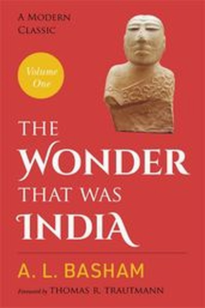

Library › History
The Wonder That Was India — Summary & Key Lessons

The forgotten genius of ancient India — its science, art, trade and ideas.
📖 OPEN THE FULL INTERACTIVE BREAKDOWN →🌐 Read it in Hindi, Hinglish, Gujarati, Tamil & 22 more languages — free, with audio.
💡 The Big Idea
Long before Europe's Renaissance, India had advanced mathematics (zero, decimal system), medicine (surgery, vaccines), astronomy, textiles and global trade — alongside a striking culture of religious tolerance. Its achievements were real, its later decline was not inevitable, and its story shows that civilizations rise on openness and fall on rigidity.
🧠 The 6 Key Lessons
Lesson 1: The Zero Was a Revolution
Chapter 1: Mathematics and Science
Indian mathematicians invented the concept of zero and the decimal place-value system — the foundation of all modern computing and commerce. Basham shows that ideas, not armies, are the most durable exports of a civilization. The tools you build in your head can outlast your empire.
📖 Example: The Bakhshali manuscript and the works of Aryabhata (who calculated pi and explained eclipses) spread through Arab scholars to Europe, where the 'Arabic numerals' changed trade forever. A placeholder symbol invented on the subcontinent still powers every… Read the full example →
⚡ Do this: Ask what mental tool or system you could build that would still be used by others after you are gone.
Lesson 2: Science and Spirituality Coexisted
Chapter 2: Medicine and Knowledge
Ancient India produced Sushruta's surgical manual — including plastic surgery and cataract operations — while also developing profound philosophy. Basham's point: mysticism and empiricism are not enemies; the richest cultures keep both. Rigid worldviews that ban one side lose both.
📖 Example: Sushruta Samhita described over 300 surgical procedures and 120 instruments, and Indian physicians administered early forms of vaccination for smallpox. The same society debated metaphysics in universities like Nalanda — proof that practical skill and deep… Read the full example →
⚡ Do this: Deliberately pair a practical skill with a reflective practice — code with philosophy, business with meditation — and let each inform the other.
Lesson 3: Trade Made Cultures Rich in Ideas Too
Chapter 3: The World of Trade
Indian textiles, spices and steel travelled to Rome, China and Africa, and with them travelled ideas — Buddhism reached China and Japan, mathematics reached the Middle East. Basham shows that open borders are intellectual superhighways; closed ones are intellectual prisons.
📖 Example: Roman writers complained that gold flowed to India for its muslin and pepper, while Indian ports hosted traders from Arabia, Persia and Southeast Asia. Each ship carried not just goods but scripts, stories and sciences that fertilized every culture they… Read the full example →
⚡ Do this: Import ideas the way India imported trade: read one book, meet one person, or join one community outside your field this quarter.
Lesson 4: Tolerance Was the Operating System
Chapter 4: Religion and Society
For centuries Indian rulers patronized multiple faiths — Buddhist emperors funded Hindu temples, and vice versa. Basham argues this tolerance was not weakness but institutional design: a diverse society functions when no group's zealotry is allowed to burn the shared roof.
📖 Example: Ashoka's edicts promoted respect across sects, and later empires continued the pattern — great universities hosted teachers of rival schools debating publicly. The result was a civilization of extraordinary creativity, because no single orthodoxy could… Read the full example →
⚡ Do this: In your team, protect the minority voice and the heretical idea on purpose — that is where the next advantage usually hides.
Lesson 5: Collapse Is Not a Mystery — It Is a Pattern
Chapter 5: The Decline
The Harappan cities declined; the Gupta empire faded; medieval India fragmented. Basham's quiet lesson: civilizations rot from within before enemies finish them — through rigid hierarchies, neglected infrastructure and lost curiosity. Decline is a process, not an event, and it is detectable early.
📖 Example: The great universities of Nalanda and Vikramashila, once centers of global learning, were sacked when the surrounding society had already stopped defending knowledge as a priority. The libraries burned partly because the culture had stopped feeding the… Read the full example →
⚡ Do this: Audit your 'civilization' — career, company, health. Which institutions are you feeding daily, and which are silently starving?
Lesson 6: Renewal Is the Real Wonder
Chapter 6: The Legacy
Basham ends with hope: India's genius was never a fixed treasure but a pattern of renewal — absorbing invaders' ideas, recombining traditions, and rising again. Cultures and careers that master reinvention treat every setback as raw material for the next chapter.
📖 Example: When Persian and Islamic influences arrived, Indian art, architecture and language synthesized them into new forms — from Urdu poetry to Indo-Saracenic buildings. What looked like defeat became a new synthesis, exactly as a phoenix uses its own ashes. Read the full example →
⚡ Do this: Treat your last failure as raw material: list what it taught you and build one new thing from the wreckage this month.
✅ 5-Step Action Plan
- Learn the story of one ancient Indian innovation and share it with someone
- Pair one practical skill with one reflective practice this month
- Import one idea from outside your field
- Protect one heretical or minority opinion in your team deliberately
- Audit your personal institutions and feed the starving ones
⚠️ When This Doesn't Work
⚠️ When this doesn't work: Romanticizing the past can breed complacency about the present — ancient achievements do not excuse current gaps, and 'glorious history' arguments are often used to dodge modern problems. Use the past as a mirror for renewal, not as a museum to worship.
💀 The Graveyard Proves It
🏺 The Harappan Collapse — The Advanced Civilization That Vanished Into Its Own Success. Burn: A civilization of a million people — cities, writing, trade — gone without a single war. Read the full case study →
💬 Best Quotes from The Wonder That Was India
- “The wonder of India was not that it was mystical, but that it was practical.”
- “India's genius lay in synthesis — absorbing new ideas without losing its own.”
- “A civilization is judged not by its monuments but by its capacity to renew itself.”
Interactive version: mark lessons as read, listen in your language, share quote cards.